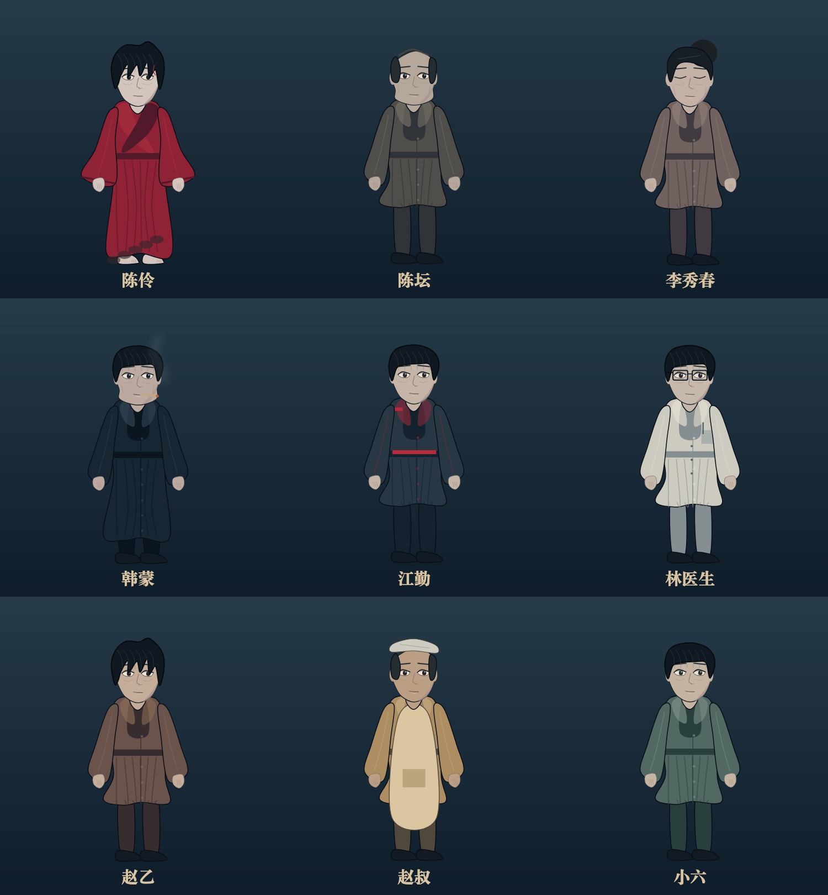

保留开篇的脆弱与试探
陈伶从恐惧、求医到观察和试验。林医生、韩蒙及邻人的身份按当时的剧情呈现。
三九音域 原著 · 开篇改编
I AM NOT THE GOD OF DRAMA
雨夜归家的人，真的还是他吗？
帘幕之后，一场没有出口的戏正在开场。
从《戏鬼回家》到《陈氏编导法则》，改编原著第 1–6 章。
一条连续的时间线
陈伶从恐惧、求医到观察和试验。林医生、韩蒙及邻人的身份按当时的剧情呈现。
人物形象贯穿三集，服装在明确的时间点切换。期待值按原著的变化顺序出现。
用统一的色彩与镜头语言连接寒霜街、家与剧院，配合字幕、中文声音和原创配乐。
本片是原著开篇六章的压缩改编，旁白与对白重新创作。原文明确的服装、道具、地点和事件顺序作为依据；未明确的面部造型、建筑细节和镜头作为本片的视觉设计。陈宴在这一阶段只被提到，没有提前出场。
